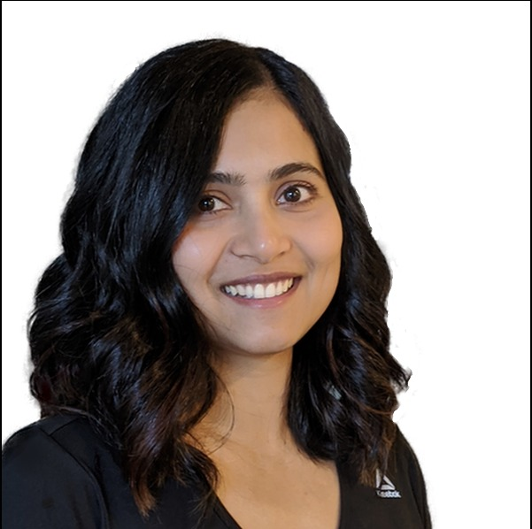

Hello there!.
My name is Neha and I am a Software Development Engineer at Sonos, Inc. and a Ph.D. Candidate in the ECE department at the University of Washington. I am an interdisciplinary researcher with expertise in Natural Language Processing, Machine Learning, and Engineering Education Research, with a passion for applying data-driven approaches to solve complex problems.
Learn about what I do